Playlista: Słuchowiska (Sezon 1)
Wszystkie odcinki sezonu 1 w jednym miejscu, gotowe do odtworzenia po kolei. Dzięki temu dziecko może wracać do ulubionych przygód Bruno i Feli kiedy tylko chce.
Strona dla rodziców i opiekunów, którzy chcą szybko znaleźć wszystkie słuchowiska i piosenki z kanału YouTube Bruno i Fela. Tu zebraliśmy najważniejsze materiały w jednym miejscu.
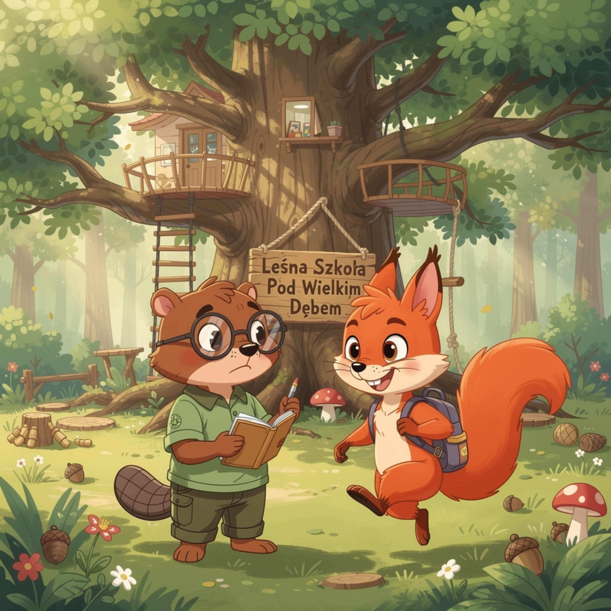
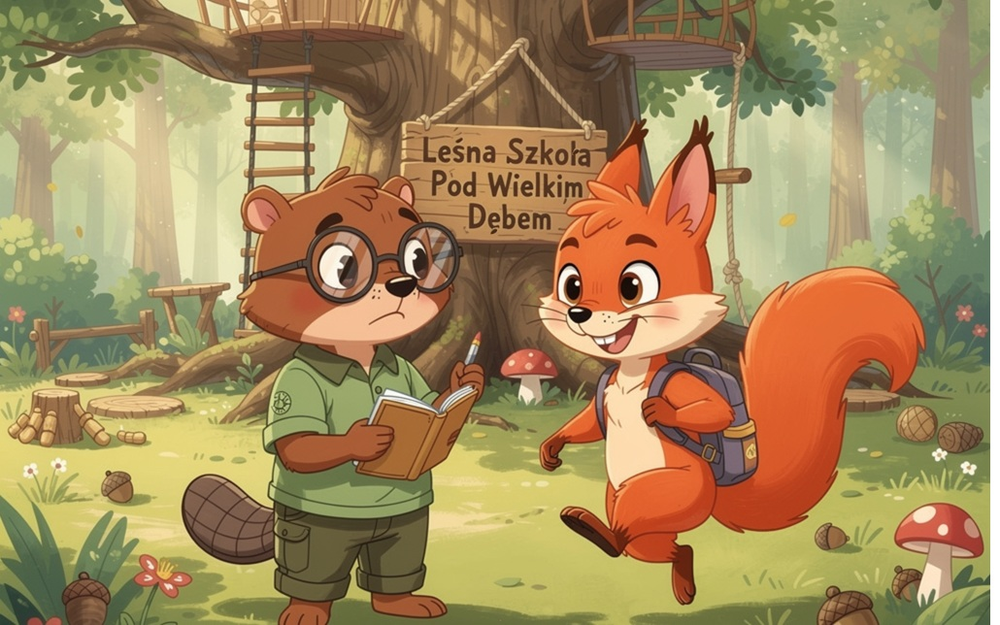
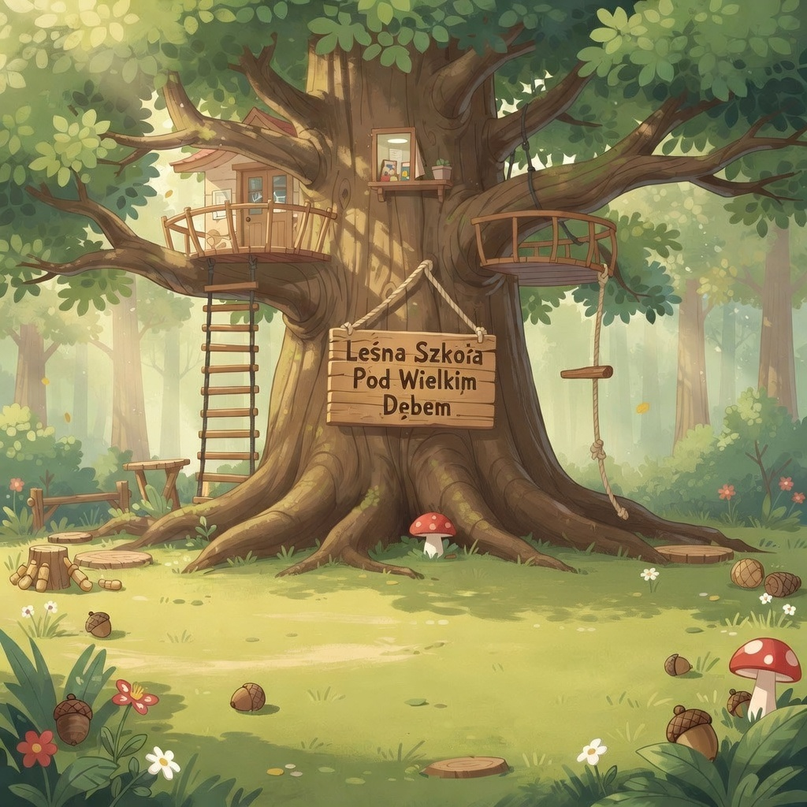
Witaj w Sezonie 1 naszego słuchowiska dla dzieci! 🌟 Poznaj bohaterów, przeżyj niezwykłe przygody i odkrywaj świat pełen wyobraźni. Każdy odcinek to nowa historia, która bawi, uczy i rozwija dziecięcą kreatywność. Miłego słuchania!
Wszystkie odcinki sezonu 1 w jednym miejscu, gotowe do odtworzenia po kolei. Dzięki temu dziecko może wracać do ulubionych przygód Bruno i Feli kiedy tylko chce.
Od intro do Wielkiego Pikniku Leśnej Szkoły
Sezon prowadzi dzieci przez przyjaźń, współpracę, odwagę i odkrywanie własnych talentów. Każdy odcinek porusza inny temat i daje pretekst do rozmowy z dzieckiem po wysłuchaniu historii.
Intro: Witaj w Lesie Szumiących Liści
Witaj w magicznym Lesie Szumiących Liści - miejscu, gdzie każdy dzień przynosi nową przygodę. Poznaj Bruna, mądrego bobra, który uwielbia rozwiązywać zagadki i wszystko dokładnie planować. I Felę - odważną, pełną energii wiewiórkę, która zawsze pierwsza rusza na spotkanie przygód.
Pierwszy dzień w Leśnej Szkole
Bruno i Fela rozpoczynają naukę w Leśnej Szkole pod Wielkim Dębem. W pierwszym odcinku poznają nowych przyjaciół, nauczycielkę Panią Sowę i przekonują się, że pierwszy dzień szkoły wcale nie musi być straszny.
Bajka dla dzieci w wieku 6-8 lat. Idealna na dobranoc, podróż samochodem lub wspólne słuchanie z rodzicami.
Wielki Wyścig do Dzwonka
Fela jest przekonana, że jest najszybszą wiewiórką w całym Lesie Szumiących Liści. Kiedy w Leśnej Szkole zostaje ogłoszony Wielki Wyścig do Dzwonka, postanawia wszystkim to udowodnić. Czy pewność siebie wystarczy do zwycięstwa?
Zabawna i ciepła bajka dla dzieci o przyjaźni, pokorze i wierze we własne możliwości.
Domek dla Jeżyka Julka
W Leśnej Szkole uczniowie otrzymują wyjątkowe zadanie - mają zbudować domek dla Jeżyka Julka. Bruno chce wszystko dokładnie zaplanować, a Fela woli od razu działać. Czy uda im się współpracować i stworzyć najlepszy domek w całym lesie?
Pierwsza klasówka z szyszek
W Leśnej Szkole zbliża się pierwsza wielka klasówka z rozpoznawania szyszek. Bruno jest spokojny - od dawna zna wszystkie gatunki drzew. Fela natomiast odkrywa, że im bardziej próbuje wszystko zapamiętać, tym bardziej wszystko jej się miesza.
Na szczęście prawdziwy przyjaciel wie, że najlepsza nauka to taka, która sprawia radość. Ciepła, pełna humoru opowieść o tym, że proszenie o pomoc nie jest oznaką słabości, a wspólna nauka potrafi zamienić największy stres w świetną zabawę.
Nocowanie pod Wielkim Dębem
W Leśnej Szkole nadchodzi najbardziej wyczekiwany wieczór w całym semestrze - wspólne nocowanie pod Wielkim Dębem. W ciągu dnia wszyscy są odważni i podekscytowani, ale gdy zapada zmrok, las zaczyna wydawać zupełnie inne dźwięki.
Czy Fela i Bruno odkryją, że strach czasem podpowiada nam rzeczy, których wcale nie ma? Ciepła i zabawna opowieść o tym, że odwaga nie oznacza braku strachu, lecz działanie mimo niego.
Największy Skoczek Leśnej Szkoły
Po nocnym deszczu na leśnej ścieżce pojawia się ogromna kałuża. Niektórzy twierdzą, że nie da się jej przeskoczyć. To wystarczy, żeby wszyscy zaczęli wymyślać coraz zabawniejsze sposoby na zdobycie tytułu „Największego Skoczka Leśnej Szkoły”.
Bruno przygotowuje dokładny plan, a Fela jest przekonana, że wystarczy dobry rozpęd. Czy naprawdę warto ryzykować tylko po to, żeby zaimponować innym?
Dzień Zamiany Talentów
W Leśnej Szkole nauczyciel ogłasza wyjątkowe wyzwanie - przez cały dzień każdy ma spróbować zachowywać się jak ktoś zupełnie inny. Bruno postanawia być spontaniczny jak Fela, a Fela chce być uporządkowana jak Bruno.
Szybko okazuje się, że bycie kimś innym wcale nie jest takie proste. Pełna humoru opowieść o tym, że każdy ma własne talenty, a prawdziwa przyjaźń polega na docenianiu różnic.
Zaginiona mapa wyprawy
W Leśnej Szkole przygotowania do Wielkiej Wyprawy zostają niespodziewanie przerwane. Znika jedyna mapa prowadząca do Leśnej Polany Odkrywców. Fela jest przekonana, że znajdzie ją w kilka minut, a Bruno chce dokładnie przeanalizować wszystkie tropy.
Dopiero gdy połączą swoje siły, odkryją, że najlepszy detektyw to nie ten, który wszystko robi sam, ale ten, który potrafi współpracować.
Wielki Mecz Lasu
W Leśnej Szkole wszyscy czekają na coroczny Wielki Mecz Lasu. Fela marzy o strzeleniu zwycięskiego gola, a Bruno przygotowuje dokładną taktykę. Jednak kiedy mecz się rozpoczyna, szybko okazuje się, że samo zdobywanie bramek nie wystarczy.
Największym sukcesem jest współpraca całej drużyny i dobra zabawa.
Wielki Piknik Leśnej Szkoły
Nadszedł dzień Wielkiego Pikniku Leśnej Szkoły - najbardziej wyczekiwanego wydarzenia całego roku. Na leśnej polanie spotykają się wszyscy uczniowie, rodziny i przyjaciele. Bruno i Fela pomagają przygotować piknik, wspominając wszystkie przygody, które przeżyli od pierwszego dnia szkoły.
Kiedy niespodziewanie nad polanę nadciąga silny wiatr, okazuje się, że dzięki przyjaźni i współpracy nawet największe zamieszanie może zakończyć się wspaniałą zabawą.
Wesołe piosenki do wspólnego śpiewania, tańczenia i zabawy. Idealne na poranki, drogę do przedszkola i rodzinne popołudnia.
Zbiór utworów muzycznych dostępnych na YouTube. Wygodny dostęp do wszystkich piosenek z kanału Bruno i Fela.
Zachęcamy, aby po wysłuchaniu odcinka lub piosenki porozmawiać z dzieckiem o emocjach, przyjaźni i odkrywaniu świata. To dobry sposób na wspólne, wartościowe chwile.
Bruno i Fela
Poznajcie Bruno i Fele! Wesoła, ciepła, dziecięca piosenka o przygodach przyjaciół w Lesie Szumiących Liści.
Słuchaj na YouTubeBruno i listy
Bruno i jego listy. Wesoła piosenka o Brunie - młodym bobrze, który kocha książki, listy, porządek i dobre pomysły.
Słuchaj na YouTubeFela na gałązce
Poznajcie Fele! Piosenka o odważnej wiewiórce, która szybko biega, wysoko skacze i zawsze jest gotowa na nową przygodę.
Słuchaj na YouTubeLas Szumiących Liści
Spokojna, magiczna piosenka opisująca Las Szumiących Liści. Niech dzieci wyobrażą sobie szumiące drzewa, śpiewające ptaki, strumień, kolorowe liście, leśne zwierzęta i Wielki Dąb, w którym mieści się szkoła.
Słuchaj na YouTubeDębowa szkoła
Radosna piosenka o szkole ukrytej w ogromnym dębie. Nauka przez zabawę, przyjaciele, wspólne odkrywanie świata, śmiech i codzienne przygody - tak właśnie powinna kojarzyć się nam ta piosenka.
Słuchaj na YouTubePlan i skok
Ciepła piosenka o przyjaźni Bruna i Feli. Bruno lubi planować, Fela działa spontanicznie, ale razem tworzą świetny zespół!
Słuchaj na YouTubeHej Przygodo!
Skoczna, pełna energii piosenka o codziennych przygodach Bruna i Feli. Poszukiwanie skarbów, budowanie domków, wyścigi, odkrywanie tajemnic lasu i pomaganie innym zwierzętom to jest to, co Bruno i Fela kochają najbardziej.
Słuchaj na YouTubeWakacje!
Wakacje! Wesoła letnia piosenka o wakacjach Bruna i Feli. Pikniki nad strumieniem, pływanie, zbieranie malin oraz wszystko, na co tylko mają ochotę!
Słuchaj na YouTubeKasztany pod dębami
Ciepła piosenka o kolorowej jesieni w Lesie Szumiących Liści.
Słuchaj na YouTubeŚpijcie już dzieci! Kołysanka
Bardzo spokojna kołysanka dla dzieci. Bruno i Fela wracają po całym dniu przygód do domu.
Słuchaj na YouTubeBruno, Fela i mądry dąb tworzą wyjątkowy, ciepły świat opowieści. Galeria poniżej przedstawia wybrane grafiki z ich przygód.
Pobierz i wydrukuj kolorowanki, aby dzieci mogły tworzyć własne wersje bohaterów Bruno i Fela. Każda grafika jest dostępna po kliknięciu przycisku pobierania.
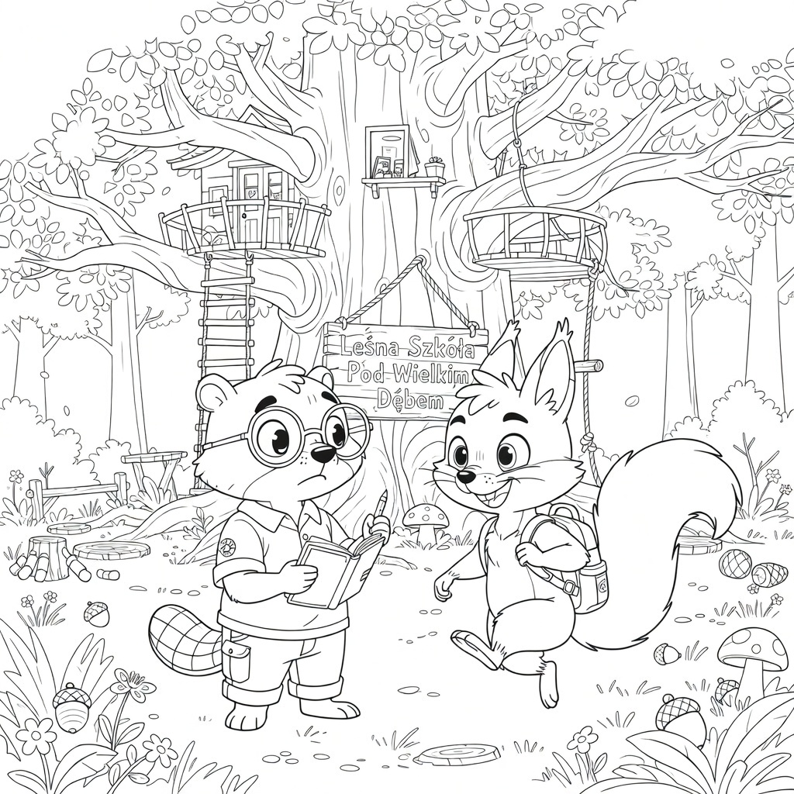
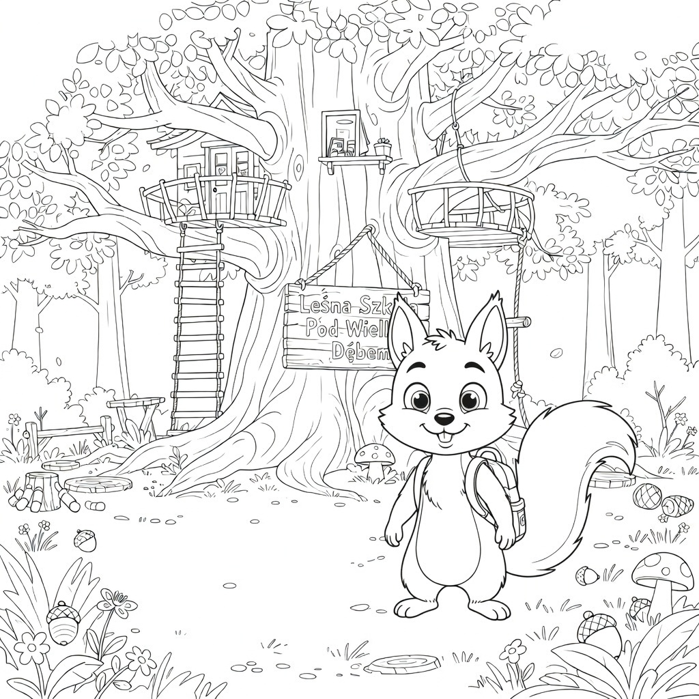
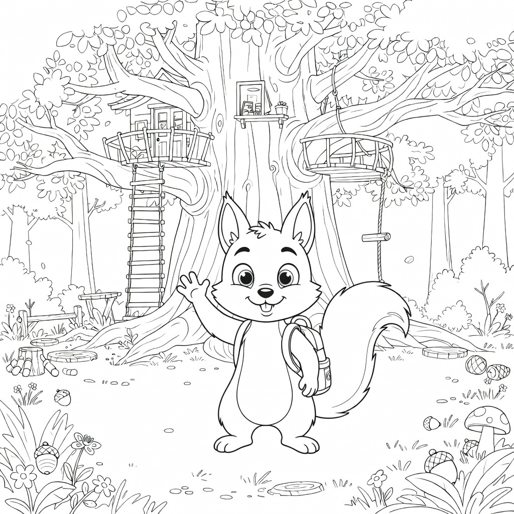
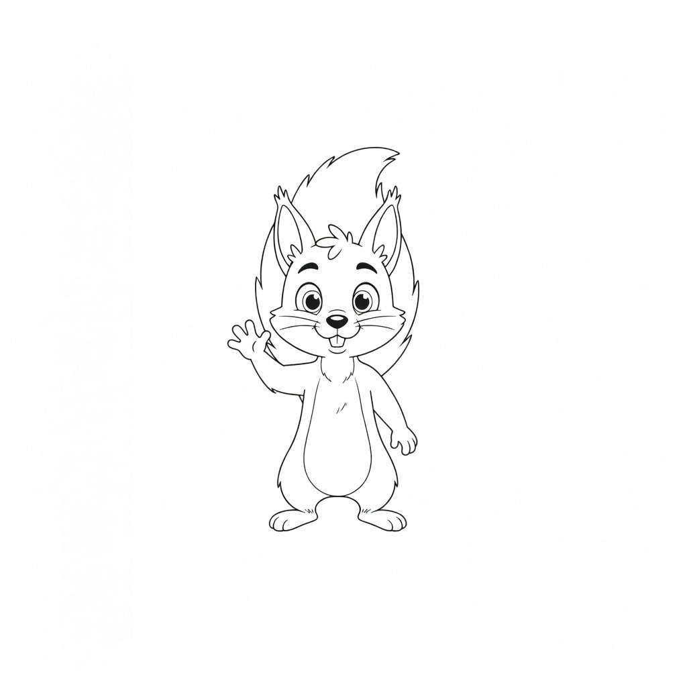
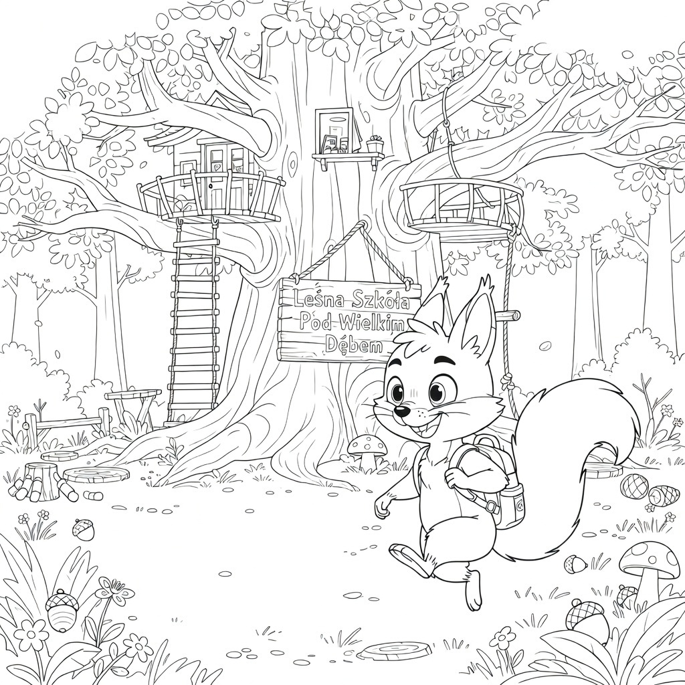
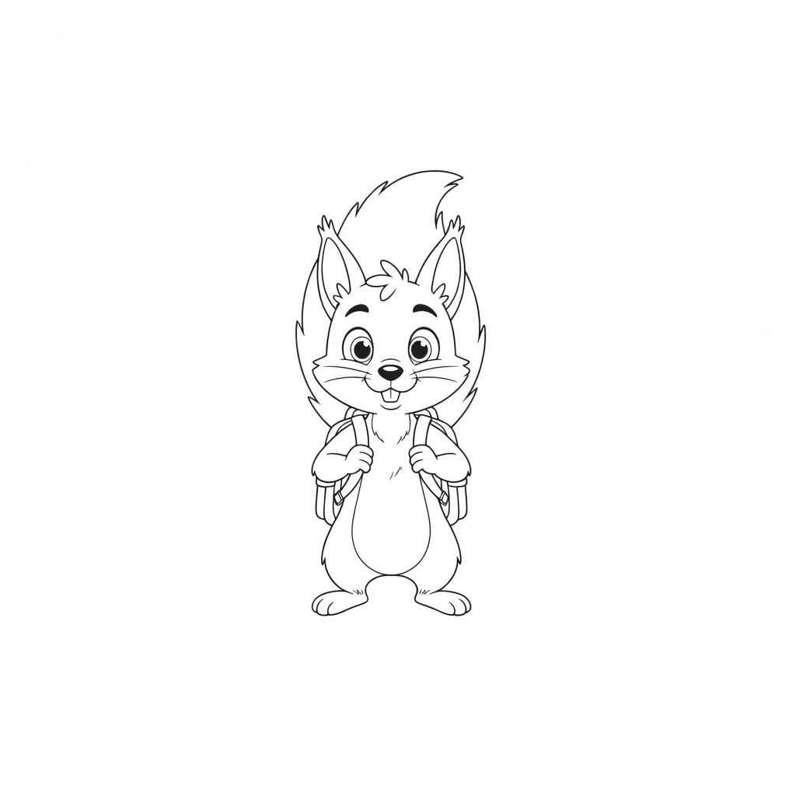
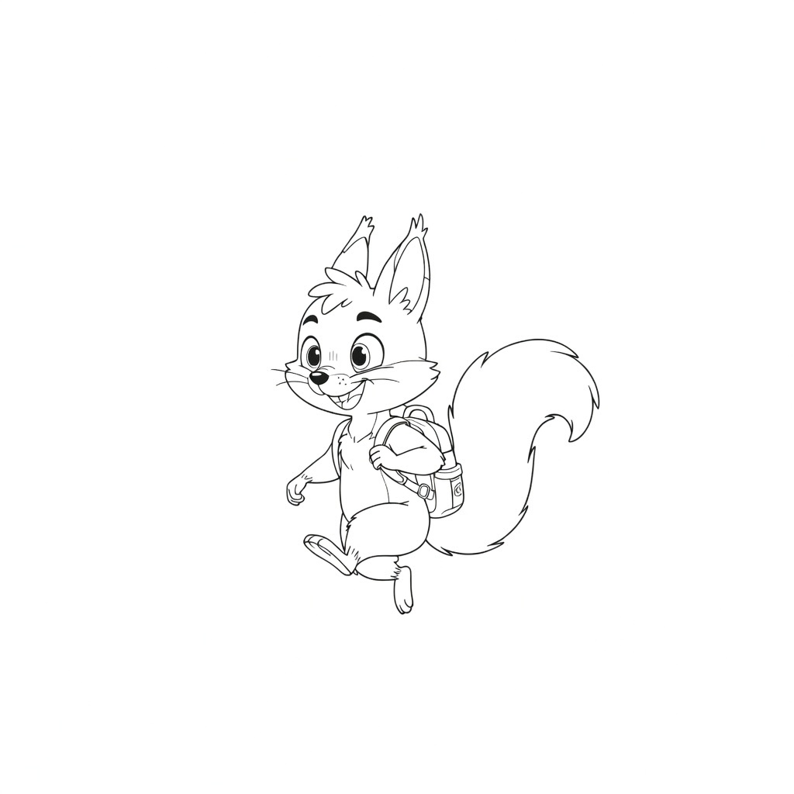
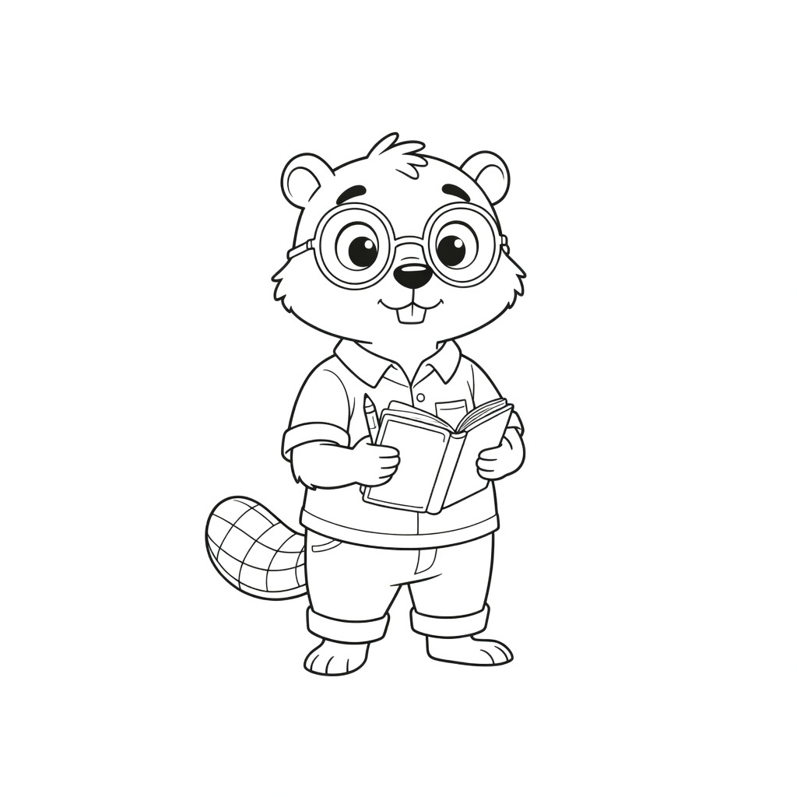
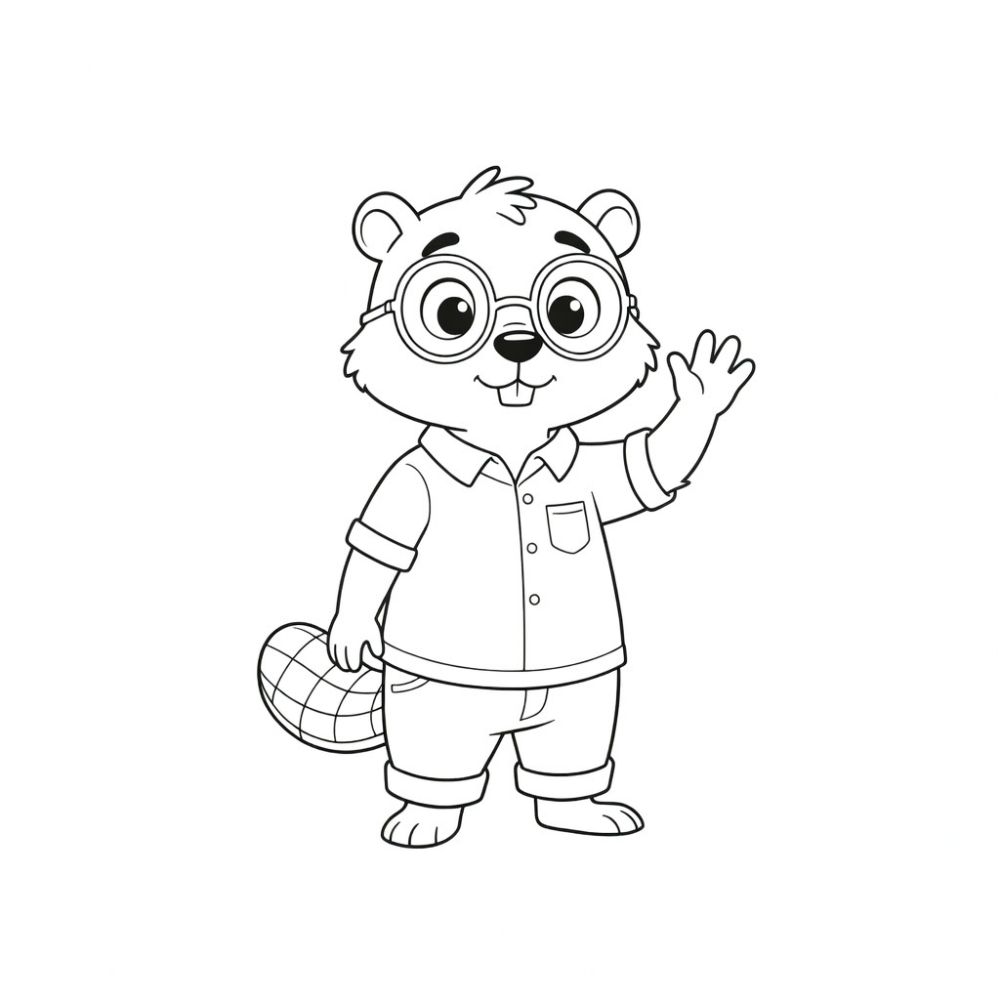
{kind=link}
{kind=link}
{kind=link}
{kind=link}
{kind=link}
{kind=link}
{kind=link}
{kind=link}
{kind=link}